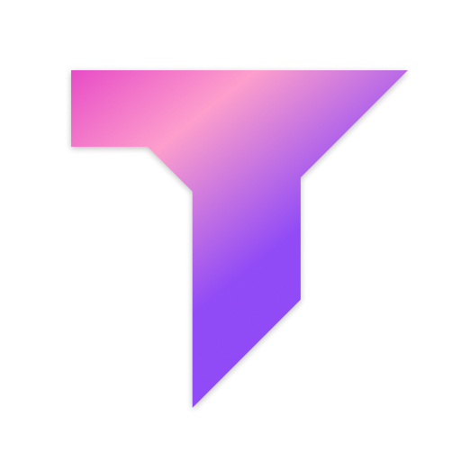
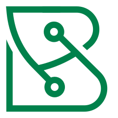
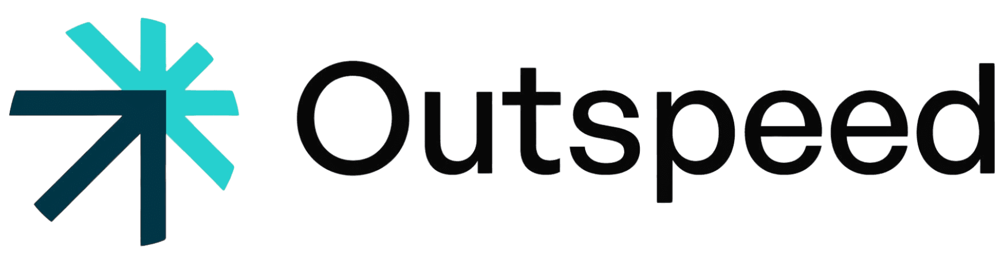

Shravan Reddy is a Partner at Pear VC, where he invests in early-stage AI, B2B software, and fintech companies.
Before Pear, he was an Engineering Leader at Stripe. He helped grow Stripe Treasury from idea to hundreds of millions of dollars in deposits, and led Issuing integrations across multiple partner banks.
Earlier, he co-founded and served as CEO of Pixelapse, a design collaboration company. He grew the business to profitability and tens of thousands of designers, and the company was later acquired by Dropbox. Post-acquisition, he led teams building collaboration products including the "new Dropbox", file history, and image previews.
Shravan grew up between the Bay Area and Hyderabad. He studied CS and Economics at Stanford, earned his Master’s in Management Science & Engineering (MS&E), and holds multiple patents.
Online
Shravan is shravan on Instagram, shravangreddy on X (Twitter), and shrredd on GitHub, LinkedIn, and Facebook.
Selected Press
- 2020 — TechCrunch: Stripe announces embedded business banking service Stripe Treasury
- 2019 — The Verge: Dropbox is getting a massive overhaul, wants to be the center of your workflow
- 2019 — Dropbox Blog: Working with design files just got easier, with new and improved image previews
- 2015 — The Next Web: Dropbox acquires visual collaboration platform Pixelapse
- 2015 — VentureBeat: Dropbox acquires Pixelapse, a version-control and collaboration tool for designers
- 2013 — TechCrunch: YC-backed Pixelapse brings GitHub-style sharing and version control to your design projects
- 2013 — Y Combinator: Pixelapse (YC W12) launches to bring GitHub-style sharing and version control to designers
Portfolio Spotlight (Pre-Seed)
Shravan currently works with the following companies, all first backed at pre-seed.
- Pravah: AI grid intelligence for utilities, focused on forecasting demand, modeling constraints, and reducing operational risk.
- Piston: A cardless payments network connecting commercial fleets and gas stations to reduce fraud and improve fuel transaction economics.
-
 NomadicML:
Video AI agents for autonomous video analysis, event detection, and operational intelligence at scale.
NomadicML:
Video AI agents for autonomous video analysis, event detection, and operational intelligence at scale.
- GuardOwl: Security operations software with AI-powered reporting, real-time guard tracking, and automated scheduling.
- Andera: AI-powered SOX control testing automation for internal audit and accounting teams.
- Optexity: Open-source infrastructure that lets agents automate workflows across web portals that do not offer modern APIs.
-
 Shiplight:
Agentic QA testing platform that expands end-to-end coverage with self-healing tests and low maintenance.
Shiplight:
Agentic QA testing platform that expands end-to-end coverage with self-healing tests and low maintenance.
- Baton: AI automation for product configuration, helping go-to-market teams spin up personalized demos and customer implementations quickly.
-  Tanagram: A rules engine for coding agents and code review automation, designed for engineering teams shipping with AI.
-  BridgeHealth: A health equity platform focused on helping care teams and community health organizations navigate benefits and social care coordination.
-  Outspeed: Voice infrastructure for AI companions, with APIs for low-latency realtime voice and text-to-speech.
Projects
- NBA Wins Pool: An iPhone app that automates Bill Simmons’ wins pool concept.
- Sketch: A parser for Sketch.app files.
- Hood! mobile application: Built for CS 147 (Introduction to Human-Computer Interaction).
- TodayScreen: iOS widgets before they were natively supported.
Contact
Best way to connect is LinkedIn.